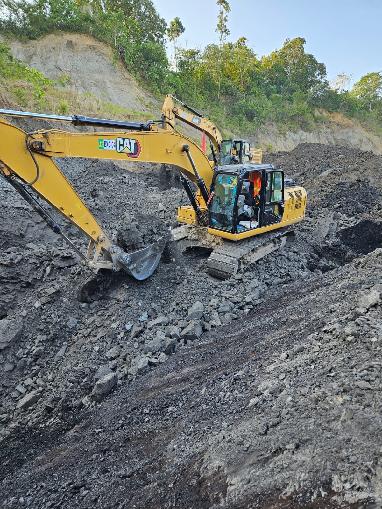
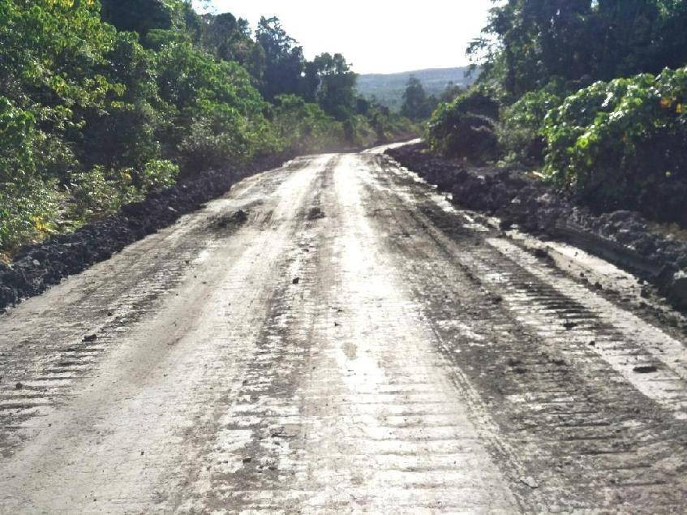
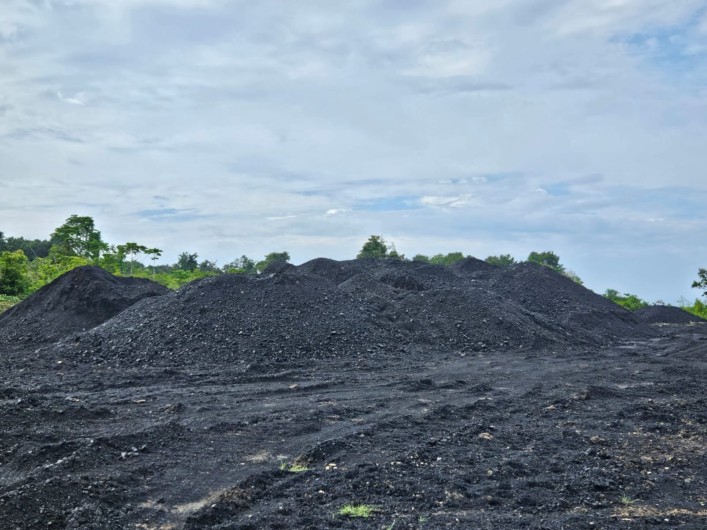
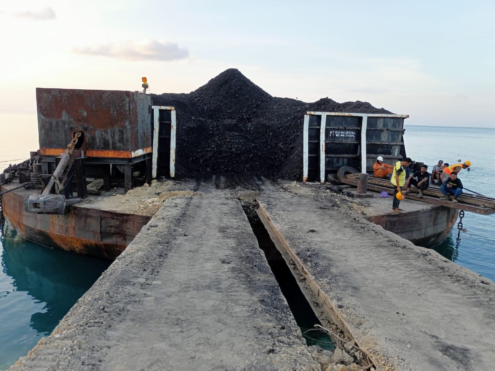
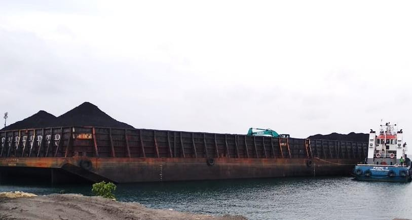
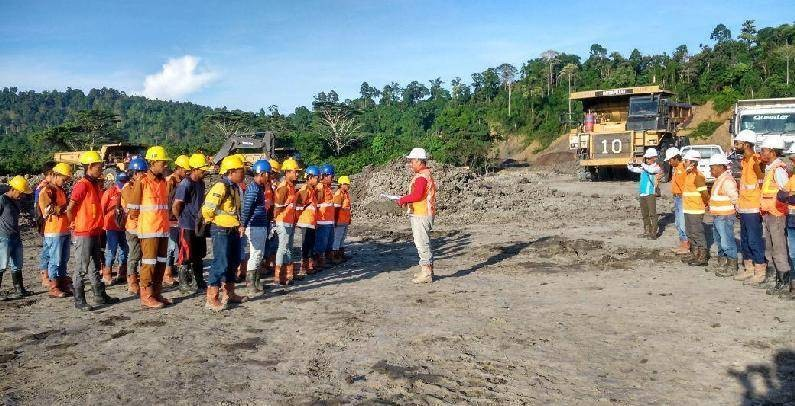

Keselamatan kerja
Pengarahan keselamatan dan penerapan SMKP di bawah supervisi Kepala Teknik Tambang.
Pertambangan batubara thermal di Kutai Timur, Kalimantan Timur. Terhubung dari tambang hingga pengapalan.
PT Jayakhisma Globe Indonesia mengelola usaha pertambangan batubara di Tanjung Mangkalihat, Kutai Timur.
Kami menghubungkan sumber daya batubara thermal dengan infrastruktur hauling, stockpile, dan Jetty Landas Beach. Prinsip Good Mining Practice menjadi landasan pengelolaan operasi, keselamatan, serta hubungan dengan masyarakat.
Tambang, hauling, stockpile, jetty, hingga transhipment dalam satu pengelolaan.
Kenali tahapan operasi dan infrastruktur pendukung JGI melalui dokumentasi arsip perusahaan.

Area konsesi dan kegiatan coal getting menjadi titik awal rantai pasok batubara JGI.

Jalur angkut menghubungkan area pit dengan stockpile dan fasilitas jetty.

Batubara ditampung dan ditata di stockpile sebelum memasuki tahap pemuatan.

Fasilitas pemuatan batubara melayani tongkang sebagai bagian dari rantai pengapalan.

Tongkang berlayar dari jetty menuju anchorage JGI untuk vessel.
Rancangan terminal untuk kapal curah 50.000–100.000 DWT dengan ship loader 2.000–2.500 TPH.
Karakteristik batubara JGI untuk kebutuhan industri dan pembangkit listrik.
| Parameter | Basis | Nilai |
|---|---|---|
| Total Moisture | AR | 30–34% |
| Ash Content | ADB | 5–8% |
| Volatile Matter | ADB | 38–42% |
| Fixed Carbon | ADB | 38–42% |
| Total Sulphur | ADB | 0,3–0,8% |
| Grindability Index | HGI | 45–50 |
Spesifikasi khas mengacu pada profil web JGI. Hasil analisis dan spesifikasi pengiriman dikonfirmasi bersama tim komersial.
Green Mining adalah komitmen untuk menempatkan keselamatan, pengelolaan lingkungan, dan masyarakat dalam kegiatan usaha.

Pengarahan keselamatan dan penerapan SMKP di bawah supervisi Kepala Teknik Tambang.
Komitmen pengelolaan air tambang, kolam pengendap, reklamasi, dan revegetasi.
Program PPM dan CSR bagi masyarakat Tanjung Mangkalihat dan Kecamatan Sandaran.
Kegiatan bersama warga dan tokoh masyarakat di sekitar wilayah operasi.
Penyaluran sembako untuk warga Tanjung Mangkalihat.
Kebersamaan tim JGI dengan warga dan tokoh masyarakat.
Dokumentasi jamaah perwakilan warga di Madinah.
Dokumentasi perusahaan dari tambang hingga pengapalan. Klik foto untuk memperbesar.
Identitas dan perizinan mengacu pada informasi profil perusahaan.
Diskusikan kebutuhan pasokan batubara, spesifikasi produk, dan peluang kemitraan dengan tim JGI.
pt.jayakhisma@gmail.comEpicentrum Walk Office Suites
Jl. H. R. Rasuna Said, Kuningan
Jakarta Selatan 12940
Unduh form, lengkapi, lalu kirim ke pt.jayakhisma@gmail.com.